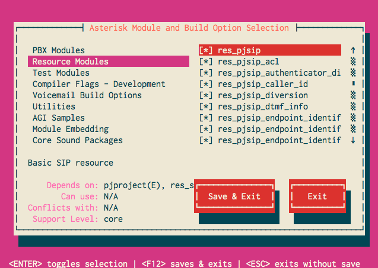

Overview
Asterisk currently contains two SIP stacks: the original chan_sip SIP channel driver which is a complete standalone implementation, has been present in all previous releases of Asterisk and no longer receives core support, and the newer chan_pjsip SIP stack that is based on Teluu's "pjproject" SIP stack. While the pjproject stack allows us to move a significant amount of code out of Asterisk, it is a separate, actively maintained, library that we integrate very tightly to. This presents challenges in making sure that the versions of Asterisk and pjproject currently installed on a system are compatible. For this reason, we've elected to "bundle" a stable, tested version of pjproject with the Asterisk distribution and integrate it into the Asterisk build process. This does not prevent you from using an external pjproject installation but it will not be supported by the Asterisk team. See PJSIP-pjproject below for more info.
Using the Bundled Version of pjproject
Beginning with Asterisk 13.8.0, a stable version of pjproject is included in Asterisk's ./third-party directory and is enabled with the --with-pjproject-bundled option to ./configure. Beginning with Asterisk 15.0.0, it is enabled by default but can be disabled with the --without-pjproject-bundled option to ./configure.
The actual pjproject source code is NOT distributed with Asterisk. Instead the Asterisk build process downloads the official pjproject tarball then patches, configures and builds pjproject when you build Asterisk.
Why use the bundled version?
- Predictability: When built with the bundled pjproject, you're always certain of the version you're running against, no matter where it's installed.
- Scalability: The default pjproject configuration is optimized for client applications. The bundled version's configuration is optimized for server use.
- Usability: Several feature patches, which have been submitted upstream to pjproject but not yet released, are usually included in the bundled version.
Safety: If a security or critical issue is identified in pjproject, it can be patched and made available with a new release of Asterisk instead of having to waiting for a new release of pjproject.
Maintainability: You don't need to build and install separate packages.
Supportability: When asking others for help, there's no question about which version of pjproject you're using and what options it was compiled with.
- Debugability: The Asterisk
DONT_OPTIMIZEandMALLOC_DEBUGcompile flags, which are essential for troubleshooting crashes and deadlocks, are automatically passed to the pjproject build process. - Compatibility: This is especially important from a development perspective because it means we can be sure that new pjproject APIs that have been introduced or old ones that have been deprecated, are handled and tested appropriately in Asterisk.
- Reliability: You can be sure that Asterisk was tested against the bundled version.
Usage
First, run ./contrib/scripts/install_prereq. Building the bundled pjproject requires the python development libraries which install_prereq installs. All you have to do now is add the --with-pjproject-bundled option to your Asterisk ./configure command line and remove any other --with-pjproject option you may have specified.
$ cd /path/asterisk-source-dir # For Asterisk 13 and 14... $ ./configure --with-pjproject-bundled # For Asterisk 15+... $ ./configure $ make && make install
The configure and make processes will download the correct version of pjproject, patch it, configure it, build it, and finally link Asterisk to it statically. No changes in runtime configuration are required. You can leave your system-installed version of pjproject in place if needed. Once compiled with the --with-pjproject-bundled option, Asterisk will ignore any other installed versions of pjproject.
Using the bundled version of pjproject doesn't necessarily mean you need internet access to download the pjproject tarball every time you build. There are 2 ways to specify an alternate location from which to retrieve it. First, assuming version 2.6 of pjproject is needed and /tmp/downloads is the directory you're going to save to, download the following files to the local directory:
$ mkdir /tmp/downloads $ wget -O /tmp/downloads/pjproject-2.6.tar.bz2 http://www.pjsip.org/release/2.6/pjproject-2.6.tar.bz2 $ wget -O /tmp/downloads/pjproject-2.6.md5 http://www.pjsip.org/release/2.6/MD5SUM.txt
It's important that both files be named pjproject-<version>.tar.bz2 and pjproject-<version>.md5 respectively.
Now perform either of the following 2 steps:
- Run ./configure with the
--with-externals-cache=/tmp/downloadsoption. ./configure will check there first and only download if the files aren't already there or the tarball checksum doesn't match what's in the md5 file. This is similar to the--with-sounds-cacheoption. BTW, the--with-externals-cachemechanism works for the precompiled codecs and the Digium Phone Module for Asterisk as well. As of Asterisk 13.18, 14.7 and 15.0, the--with-download-cacheoption can be used to specify both the externals and sounds cache directory. - Set the
PJPROJECT_URLenvironment variable to any valid URL (including file:// URLs) where./configurecan find the tarball and checksum files. The variable can be set in your environment and exported or specified directly on the./configurecommand line. As of Asterisk 13.18, 14.7 and 15.0, theAST_DOWNLOAD_CACHEenvironment variable can be used to specify both the externals and sounds cache directory.
- Run ./configure with the
Building and Installing pjproject from Source
Installing pjproject from source or from packages is no longer a supported configuration for Asterisk versions that contain the bundled version of pjproject. Reports of pjproject-related Asterisk issues may only be made against the bundled version. The bundled version inherits flags like DONT_OPTIMIZE and MALLOC_DEBUG from Asterisk which allows us to accurately diagnose issues across both Asterisk and pjproject.
Because earlier releases of pjproject cannot build shared object libraries, some changes were required in order to use it with Asterisk 12. As such, Asterisk requires pjproject version 2.4 or later (2.6 is current). Alternatively, an Asterisk compatible version of pjproject is available on github , or - depending on your Linux distribution - available as a package.
Earlier versions of pjproject downloaded from www.pjsip.org will not work with Asterisk 12 or greater.
If you have previously installed a version of pjproject, you must remove that version of pjproject prior to building and installing the Asterisk 12+ compatible version of pjproject. See Uninstalling pjproject for more information.
Downloading pjproject
Obtaining pjproject from Teluu:
Use wget to pull the latest version (currently 2.6) from www.pjsip.org. Note that the instructions assume that this is 2.6; for the latest version, refer to www.pjsip.org:
# wget http://www.pjsip.org/release/2.6/pjproject-2.6.tar.bz2 # tar -xjvf pjproject-2.6.tar.bz2
Obtaining the latest pjproject from the svn repo:
Use svn to install the latest version from www.pjsip.org.
# svn co http://svn.pjsip.org/repos/pjproject/trunk/ pjproject-trunk
Obtaining (old asterisk) pjproject from the github repo:
If you do not have git, install git on your local machine.
Downloading and installing git is beyond the scope of these instructions, but for Debian/Ubuntu systems, it should be as simple as:
apt-get install git
And for RedHat/CentOS systems:
yum install git
Checkout the Asterisk 12-compatible pjproject from the Asterisk github repo:
# git clone https://github.com/asterisk/pjproject pjproject
And that's it!
Building and Installing pjproject
The first step in building and installing pjproject is configuring it using configure. For Asterisk, this is arguably the most important step in this process. pjproject embeds a number of third party libraries which can conflict with versions of those libraries that may already be installed on your system. Asterisk will not use the embedded third party libraries within pjproject. As an example, if you are going to build the res_srtp module in Asterisk, then you must specify "--with-external-srtp" when configuring pjproject to point to an external srtp library.
Additionally, Asterisk REQUIRES two or three options to be passed to configure:
--enable-shared- Instruct pjproject to build shared object libraries. Asterisk will only use shared objects from pjproject.--prefix- Specify root install directory for pjproject. This will be dependent on your distribution of Linux; typically this is/usrfor most systems. The default is/usr/local--libdir- Specify the installation location for object code libraries. This may need to be set to/usr/lib64for some 64-bit systems such as CentOS.
Failure to build Asterisk with shared pjproject object libraries WILL result in seemingly random crashes. For Asterisk to work properly with pjproject, pjproject MUST be built with shared object libraries.
Compiler DEFINEs
Users who expect to deal with Contact URIs longer than 256 characters or hostnames longer than 128 characters should set
PJSIP_MAX_URL_SIZEandPJ_MAX_HOSTNAMEas appropriate.- IPv6 support in pjproject is, by default, disabled. To enable it, set
PJ_HAS_IPV6to1. - The default configuration of pjproject enables "assert" functions which can cause Asterisk to crash unexpectedly. To disable the asserts, set
NDEBUGto1. - The default number of TCP/TLS incoming connections allowed is 64. If you plan on having more than that you'll need to set
PJ_IOQUEUE_MAX_HANDLESto the new limit.
With the exception of PJ_IOQUEUE_MAX_HANDLES, the options can be set in CFLAGS and passed to configure as follows: './configure CFLAGS="-DNDEBUG=1 -DPJ_HAS_IPV6=1"', etc. A better way is to create or edit the pjlib/include/pj/config_site.h file and set them all there. You should use the bundled version of the config_site.h file in third-party/pjproject/patches as a starting point. Below is a copy of the file at the time of this writing.
/* * Asterisk config_site.h */ #include <sys/select.h> /* * Since both pjproject and asterisk source files will include config_site.h, * we need to make sure that only pjproject source files include asterisk_malloc_debug.h. */ #if defined(MALLOC_DEBUG) && !defined(_ASTERISK_ASTMM_H) #include "asterisk_malloc_debug.h" #endif /* * Defining PJMEDIA_HAS_SRTP to 0 does NOT disable Asterisk's ability to use srtp. * It only disables the pjmedia srtp transport which Asterisk doesn't use. * The reason for the disable is that while Asterisk works fine with older libsrtp * versions, newer versions of pjproject won't compile with them. */ #define PJMEDIA_HAS_SRTP 0 #define PJ_HAS_IPV6 1 #define NDEBUG 1 #define PJ_MAX_HOSTNAME (256) #define PJSIP_MAX_URL_SIZE (512) #ifdef PJ_HAS_LINUX_EPOLL #define PJ_IOQUEUE_MAX_HANDLES (5000) #else #define PJ_IOQUEUE_MAX_HANDLES (FD_SETSIZE) #endif #define PJ_IOQUEUE_HAS_SAFE_UNREG 1 #define PJ_IOQUEUE_MAX_EVENTS_IN_SINGLE_POLL (16) #define PJ_SCANNER_USE_BITWISE 0 #define PJ_OS_HAS_CHECK_STACK 0 #ifndef PJ_LOG_MAX_LEVEL #define PJ_LOG_MAX_LEVEL 6 #endif #define PJ_ENABLE_EXTRA_CHECK 1 #define PJSIP_MAX_TSX_COUNT ((64*1024)-1) #define PJSIP_MAX_DIALOG_COUNT ((64*1024)-1) #define PJSIP_UDP_SO_SNDBUF_SIZE (512*1024) #define PJSIP_UDP_SO_RCVBUF_SIZE (512*1024) #define PJ_DEBUG 0 #define PJSIP_SAFE_MODULE 0 #define PJ_HAS_STRICMP_ALNUM 0 /* * Do not ever enable PJ_HASH_USE_OWN_TOLOWER because the algorithm is * inconsistently used when calculating the hash value and doesn't * convert the same characters as pj_tolower()/tolower(). Thus you * can get different hash values if the string hashed has certain * characters in it. (ASCII '@', '[', '\\', ']', '^', and '_') */ #undef PJ_HASH_USE_OWN_TOLOWER /* It is imperative that PJSIP_UNESCAPE_IN_PLACE remain 0 or undefined. Enabling it will result in SEGFAULTS when URIs containing escape sequences are encountered. */ #undef PJSIP_UNESCAPE_IN_PLACE #define PJSIP_MAX_PKT_LEN 32000 #undef PJ_TODO #define PJ_TODO(x) /* Defaults too low for WebRTC */ #define PJ_ICE_MAX_CAND 32 #define PJ_ICE_MAX_CHECKS (PJ_ICE_MAX_CAND * PJ_ICE_MAX_CAND) /* Increase limits to allow more formats */ #define PJMEDIA_MAX_SDP_FMT 64 #define PJMEDIA_MAX_SDP_BANDW 4 #define PJMEDIA_MAX_SDP_ATTR (PJMEDIA_MAX_SDP_FMT*2 + 4) #define PJMEDIA_MAX_SDP_MEDIA 16 /* * Turn off the periodic sending of CRLNCRLN. Default is on (90 seconds), * which conflicts with the global section's keep_alive_interval option in * pjsip.conf. */ #define PJSIP_TCP_KEEP_ALIVE_INTERVAL 0 #define PJSIP_TLS_KEEP_ALIVE_INTERVAL 0
Other common configure options needed for pjproject are listed below:
| Library | Configure option | Notes |
|---|---|---|
| libspeex shared objects | --with-external-speex | Make sure that the library development headers are accessible from pjproject. The CFLAGS and LDFLAGS environment variables may be used to set the include/lib paths. |
| libsrtp shared objects | --with-external-srtp | Make sure that the library development headers are accessible from pjproject. The CFLAGS and LDFLAGS environment variables may be used to set the include/lib paths. |
| GSM codec | --with-external-gsm | Make sure that the library development headers are accessible from pjproject. The CFLAGS and LDFLAGS environment variables may be used to set the include/lib paths. |
| Disable sound | --disable-sound | Let Asterisk perform sound manipulations. |
| Disable resampling | --disable-resample | Let Asterisk perform resample operations. |
| Disable video | --disable-video | Disable video support in pjproject's media libraries. This is not used by Asterisk. |
| Disable AMR | --disable-opencore-amr | Disable AMR codec support. This is not used by Asterisk |
These are some of the more common options used to disable third party libraries in pjproject. However, other options may be needed depending on your system - see
for a full list of configure options you can pass to pjproject.configure --help
Now that you understand the pjproject configure options available, change directories to the pjproject source directory:# cd pjproject
In the pjproject source directory, run the configure script with the options needed for your system:
# ./configure --prefix=/usr --enable-shared --disable-sound --disable-resample --disable-video --disable-opencore-amr CFLAGS='-O2 -DNDEBUG'
A few recommended options are shown. That includes setting a couple important CFLAGS, -O2 for common optimizations and -DNDEBUG to disable debugging code and assertions.
Build pjproject:
# make dep # make
Install pjproject
# make install
Update shared library links.
# ldconfig
Verify that pjproject has been installed in the target location by looking for, and finding the various pjproject modules:
# ldconfig -p | grep pj libpjsua.so (libc6,x86-64) => /usr/lib/libpjsua.so libpjsip.so (libc6,x86-64) => /usr/lib/libpjsip.so libpjsip-ua.so (libc6,x86-64) => /usr/lib/libpjsip-ua.so libpjsip-simple.so (libc6,x86-64) => /usr/lib/libpjsip-simple.so libpjnath.so (libc6,x86-64) => /usr/lib/libpjnath.so libpjmedia.so (libc6,x86-64) => /usr/lib/libpjmedia.so libpjmedia-videodev.so (libc6,x86-64) => /usr/lib/libpjmedia-videodev.so libpjmedia-codec.so (libc6,x86-64) => /usr/lib/libpjmedia-codec.so libpjmedia-audiodev.so (libc6,x86-64) => /usr/lib/libpjmedia-audiodev.so libpjlib-util.so (libc6,x86-64) => /usr/lib/libpjlib-util.so libpj.so (libc6,x86-64) => /usr/lib/libpj.so
Finally, verify that Asterisk detects the pjproject libraries. In your Asterisk source directory:
# ./configure # make menuselect
- Browse to the Resource Modules category and verify that the
res_pjsipmodules are enabled:
 - You're all done! Now, build and install Asterisk as your normally would.
If you need pjsua (for the testsuite, for example), then you may also need to take a look at Installing the Asterisk Test Suite#pjsua_installationPJSUAInstallation to set that up externally as well.
Troubleshooting
First, if you're using Asterisk 13.8.0 or greater, consider switching to the Bundled Version of pjproject
Asterisk fails to detect pjproject libraries
After building and installing pjproject, Asterisk fails to detect any of the libraries - the various res_pjsip components cannot be selected in Asterisk's menuselect
Solution
Verify that Asterisk's config.log shows the following:
configure:23029: checking for PJPROJECT configure:23036: $PKG_CONFIG --exists --print-errors "libpjproject" Package libpjproject was not found in the pkg-config search path. Perhaps you should add the directory containing `libpjproject.pc' to the PKG_CONFIG_PATH environment variable No package 'libpjproject' found
- Make sure you have
pkg-configinstalled on your system. - pjproject will install the package config file in
/usr/lib/pkgconfig. Some distributions, notably Fedora, will instead look for the library in/usr/lib64. Update yourPKG_CONFIG_PATHenvironment variable with/usr/lib/pkgconfigand re-run Asterisk'sconfigurescript.
- Make sure you have
pjproject fails to build: errors related to opencore_amr
When building pjproject, errors about opencore_amr are displayed, e.g.:
output/pjmedia-codec-x86_64-unknown-linux-gnu/opencore_amr.o:(.rodata+0x60): multiple definition of `pjmedia_codec_amrnb_framelenbits' output/pjmedia-codec-x86_64-unknown-linux-gnu/opencore_amr.o:(.rodata+0x60): first defined here output/pjmedia-codec-x86_64-unknown-linux-gnu/opencore_amr.o:(.rodata+0x80): multiple definition of `pjmedia_codec_amrnb_framelen' output/pjmedia-codec-x86_64-unknown-linux-gnu/opencore_amr.o:(.rodata+0x80): first defined here output/pjmedia-codec-x86_64-unknown-linux-gnu/opencore_amr.o:(.rodata+0x20): multiple definition of `pjmedia_codec_amrwb_framelenbits' output/pjmedia-codec-x86_64-unknown-linux-gnu/opencore_amr.o:(.rodata+0x20): first defined here output/pjmedia-codec-x86_64-unknown-linux-gnu/opencore_amr.o:(.rodata+0x40): multiple definition of `pjmedia_codec_amrwb_framelen' output/pjmedia-codec-x86_64-unknown-linux-gnu/opencore_amr.o:(.rodata+0x40): first defined here ...
Solution
You already have the AMR codec installed. Run configure with the --disable-opencore-amr option specified.
pjproject fails to build: video linker errors
When building pjproject, linker errors referring to various video methods are displayed, e.g.:
/home/mjordan/projects/pjproject/pjmedia/lib/libpjmedia-videodev.so: undefined reference to `pjmedia_format_init_video' /home/mjordan/projects/pjproject/pjmedia/lib/libpjmedia.so: undefined reference to `pjmedia_video_format_mgr_instance' /home/mjordan/projects/pjproject/pjmedia/lib/libpjmedia-videodev.so: undefined reference to `pjmedia_format_get_video_format_detail' /home/mjordan/projects/pjproject/pjmedia/lib/libpjmedia-videodev.so: undefined reference to `pjmedia_get_video_format_info'
Solution
Run configure with either or both --disable-video or --disable-v4l2
ldconfig fails to display pjproject libraries
After building pjproject, the dump provided by ldconfig -p doesn't display any libraries.
Solution
Run ldconfig to re-configure dynamic linker run-time bindings. This will need to be run with super user permissions.
pjproject fails to build on Raspberry Pi
pjproject/Asterisk fails to compile on your Raspberry Pi (raspbian) due to pjproject configure scripts not detecting endianness:
/usr/include/pj/config.h:243:6: error: #error Endianness must be declared for this processor
In file included from /usr/include/pj/types.h:33:0,
from /usr/include/pjsip/sip_config.h:27,
from /usr/include/pjsip/sip_types.h:34,
from /usr/include/pjsip.h:24,
from conftest.c:290:
/usr/include/pj/config.h:1161:4: error: #error "PJ_IS_LITTLE_ENDIAN is not defined!"
/usr/include/pj/config.h:1165:4: error: #error "PJ_IS_BIG_ENDIAN is not defined!"
Solution
- Edit
/usr/include/pj/config.h(using the editor of your choice) - Replace this code:
- Edit
/*
* ARM, bi-endian, so raise error if endianness is not configured
*/
# undef PJ_M_ARMV4
# define PJ_M_ARMV4 1
# define PJ_M_NAME "armv4"
# define PJ_HAS_PENTIUM 0
# if !PJ_IS_LITTLE_ENDIAN && !PJ_IS_BIG_ENDIAN
# error Endianness must be declared for this processor
# endif
With this:
/*
* ARM, bi-endian, so raise error if endianness is not configured
*/
# undef PJ_M_ARMV4
# define PJ_M_ARMV4 1
# define PJ_M_NAME "armv4"
# define PJ_HAS_PENTIUM 0
# define PJ_IS_LITTLE_ENDIAN 1
# define PJ_IS_BIG_ENDIAN 0
Then recompile. This workaround was taken from issue ASTERISK-23315.
Uninstalling a Previous Version of pjproject
Typically, other versions of pjproject will be installed as static libraries. These libraries are not compatible with Asterisk and can confuse the build process for Asterisk 12. As such, any static libraries must be removed prior to installing the compatible version of pjproject.
pjproject provides an uninstall make target that will remove previous installations. It can be called from the pjproject source directory like:
# make uninstall
If you don't have an "uninstall" make target, you may need to fetch and merge the latest pjproject from https://github.com/asterisk/pjproject
Alternatively, the following should also remove all previously installed static libraries:
# rm -f /usr/lib/libpj*.a /usr/lib/libmilenage*.a /usr/lib/pkgconfig/libpjproject.pc
Finally, you will need to update shared library links:
# ldconfig
If you want to run a sanity check, you can verify that pjproject has been uninstalled by ensuring no pjproject modules remain on the system:
# ldconfig -p | grep pj
If running the above command yields no results, that's it! You have successfully uninstalled pjproject from your system. If there are results, you may need to remove other pjproject-related items from /usr/lib as well.
{kind=link}
{kind=link}
{kind=link}
{kind=link}
{kind=link}